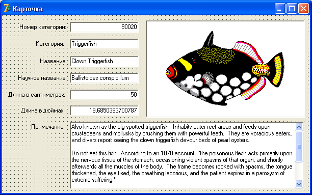

Навигация
Для перемещения по записям таблицы существуют такие методы:
First – переход на первую запись.
Last – переход на последнюю запись.
Next – переход на следующую запись.
Prior – переход на предыдущую запись.
Создадим обработчики нажатия на кнопки в панели "Навигация".
В обработчике кнопки "Начало" напишем
Table1.First;
В обработчике кнопки "Назад" напишем
Table1.Prior;
В обработчике кнопки "Вперед" напишем
Table1.Next;
В обработчике кнопки "Конец" напишем
Table1.Last;
Сохраните проект, откомпилируйте и посмотрите, как он работает.
Указатель позиции должен перемещаться, когда пользователь нажимает на кнопки.
Кроме того, перемещаться можно будет с помощью самой сетки DBGrid.
Типы данных
Листая таблицу, вы видели такие данные, как MEMO и GRAPHIC, а сами данные не отображались.
Дело в том, что таблицы имеют разные типы данных.
Бывают числовые типы, строковые, типы "Дата".
Обычно, в строковый тип можно ввести текст длиной не более 255 символов.
Если же вам требуется поместить в таблицу более длинный текст, например, аннотацию к книге, то можно воспользоваться типом MEMO.
При этом создается новый файл, в котором хранится сам текст, а в таблице указана ссылка на этот текст.
Длина текста в MEMO неограничена.
Для отображения MEMO потребуется специальный компонент.
Поле GRAPHIC хранит изображения – картинки, фотографии.
Для их отображения также нужен специальный компонент.
Улучшим наш пример, создав форму, в которой, как в карточке, мы сможем видеть все данные текущей записи.
Однако для начала познакомимся с DataModule.
Это модуль, который не имеет формы.
Его очень удобно использовать в многооконных проектах, где окна работают с общими данными.
Для нас общие данные – это компоненты Table и DataSource.
Прежде всего, закройте таблицу, указав False в ее свойстве Active.
Выберите команду File-> New -> Data Module.
У вас появится новое окошко, но это не форма.
Измените имя этого окна на fDM, чтобы не нужно было писать длинного обращения к компонентам.
Теперь вернитесь на главную форму и выделите компоненты Table и DataSource.
Выберите команду Edit -> Cut (вырезать).
Затем перейдите в окно fDM, и выберите команду Edit -> Paste (вставить).
Если у вас эти компоненты были в нижней части формы, то они могут оказаться вне зоны видимости окна fDM.
Это не страшно – прокрутите окно, либо увеличьте его размеры, чтобы видеть компоненты, а затем перетащите их в верхнюю часть окна.
После чего можно уменьшить размеры fDM.
Сохраните окно в модуле DM.pas.
Далее переходим на главную форму.
Эта форма должна видеть окно fDM, чтобы работать с компонентами, установленными в нем, поэтому выберите команду File -> Use Unit и там выберите DM.
Теперь выделите сетку.
В ее свойстве DataSource нужно выбрать наш DataSource, который выглядит уже как fDM.DataSource1.
Теперь откройте таблицу, указав True в ее свойстве Active.
Как видите, данные по-прежнему отображаются, хотя компоненты доступа хранятся в другом модуле.
Теперь мы готовы к тому, чтобы создать новое окно для просмотра данных.
Создайте новую форму, назовите ее fViewer, и сохраните в модуле Viewer.
Не забудьте выбрать команду Use Unit и там – DM, ведь новая форма также будет работать с компонентами Table и DataSource.
В свойстве Caption напишите "Карточка".
Теперь перейдите на вкладку DataControls.
Найдите там компонент DBEdit.
От обычного Edit он отличается тем, что поддерживает связь с базой данных.
Бросьте на форму, один под другим, 6 таких компонентов.
Ниже бросьте DBMemo, а справа от DBEdit – DBImage.
У вас должна получится форма примерно такого вида:
Слева от компонентов доступа к данным установите соответствующее количество Label, и пропишите пояснения к полям, как на картинке выше.
Выделите все компоненты доступа (только все DBEdit, DBMemo и DBImage ).
Свойство ReadOnly у них установите в True, чтобы пользователь не испортил данные демонстрационной таблицы.
Далее, в свойстве DataSource выделенных компонентов нужно выбрать наш fDM.DataSource1.
Теперь придется с каждым компонентом работать отдельно.
Выделите верхний DBEdit, и в свойстве DataField (поле) выберите "Species No".
Все компоненты DBEdit, сверху – вниз, должны быть привязаны к следующим полям:
Species No Category Common_Name Species Name Length (cm) Length_In
Компонент DBMemo должен быть привязан к полю Notes, а компонент DBImage – к полю Graphic.
Кстати, у DBMemo установите вертикальную полосу прокрутки, чтобы можно было листать слишком большие примечания.
Собственно, карточка готова.
Осталось только вызывать ее из главной формы.
Если вы еще не выполнили для главной формы команду File -> Use Unit, и не выбрали там модуль Viewer, то сделайте это сейчас.
Затем выделите сетку и сгенерируйте для нее событие onDblClick, где пропишите вызов окна – карточки:
fViewer.ShowModal;
Теперь пользователь, щелкнув дважды по какой либо записи, вызовет карточку, где будут отражены данные этой записи.
Однако перед компиляцией проекта нужно кое-что исправить.
Мы запрограммировали наши 4 кнопки перемещения, когда еще компонент Table был на главной форме.
Однако теперь он в окне DM, поэтому добавьте fDM перед обращением к таблице во всех 4 кнопках, как в примере:
fDM.Table1.First;
Сохраните проект, скомпилируйте, и посмотрите, как он работает.
На следующей лекции мы продолжим работу над этим проектом.